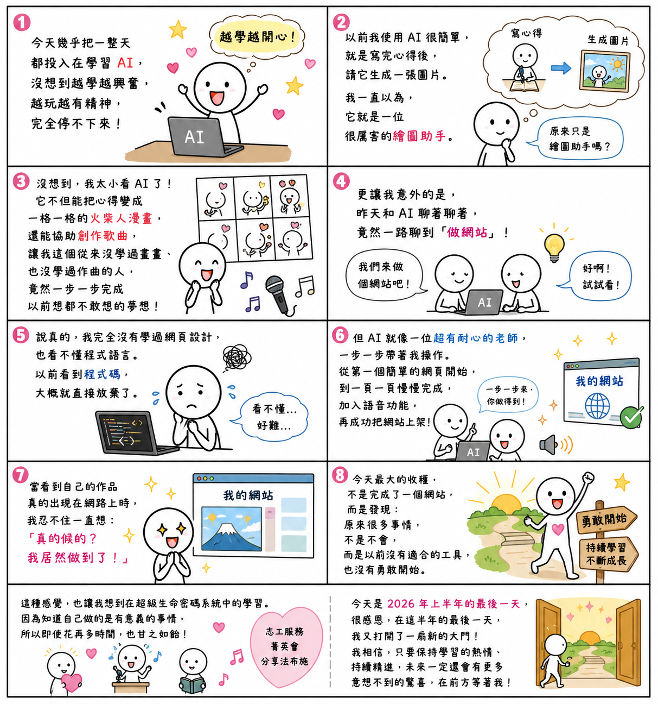

日期：2026/06/30

今天幾乎把一整天都投入在學習 AI，沒想到越學越興奮，越玩越有精神，完全停不下來！
以前我使用 AI 的方式其實很簡單，就是寫完心得後，再請 AI 幫我生成一張圖片。我一直以為，它就是一位很厲害的繪圖助手。
沒想到，我真的太小看 AI 了！
它不但能依照我喜歡的火柴人漫畫風格，把心得變成一格一格的漫畫，還能協助創作歌曲，讓我這個從來沒學過畫畫、也沒學過作曲的人，竟然一步一步完成以前想都不敢想的夢想。
更讓我意外的是，昨天和 AI 聊著聊著，竟然一路聊到「做網站」。
說真 的，我完全沒有學過網頁設計，也看不懂程式語言。如果是以前，我大概看到程式碼就直接放棄了。
可是 AI 就像一位超有耐心的老師，一步一步帶著我操作。從第一個簡單的網頁開始，到一頁一頁慢慢完成，甚至加入語音功能，再把網站成功上架。當看到自己的作品真的出現在網路上時，我忍不住一直想：「真的假的？我居然做到了！」
今天最大的收穫，不只是完成了一個網站，而是發現：原來很多事情，不是不會，而是以前沒有適合的工具，也沒有勇敢開始。
更有趣的是，我今天幾乎學了一整天，卻完全不覺得累，反而越學越有能量、越做越開心。
這種感覺，也讓我想到自己在超級生命密碼系統中的學習。
每一次投入志工服務、參加每週的菁英會、上台分享法布施，或是思考如何把導師分享的正向理念傳遞給更多人時，我都有同樣的感受。因為知道自己做的是有意義的事情，所以即使花再多時間，也甘之如飴。
導師常提醒我們，要不斷學習、不斷成長。我想，AI 對我來說，不只是科技工具，更是一位能陪伴我學習、幫助我實現創意的好夥伴。它沒有取代我的思考，而是讓我的想法有更多機會被實現。
今天是 2026 年上半年的最後一天。
很感恩，在這半年的最後一天，我又打開了一扇新的大門：
我相信，未來在前方一定還有更多美好的學習等著我！